GAUGES
We can convert your old gauges using modern electronics. Custom colored silk screen dial faces to create a period look, or a one-off custom apperance.
Gauges can also be restored to factory original.
See below for some jobs from our shop.
1920's through 1970's
All Makes & Models
1932 Ford Oil Chex and 1933-4 Ford Oil Chex

1933 Dodge Original repair and restore
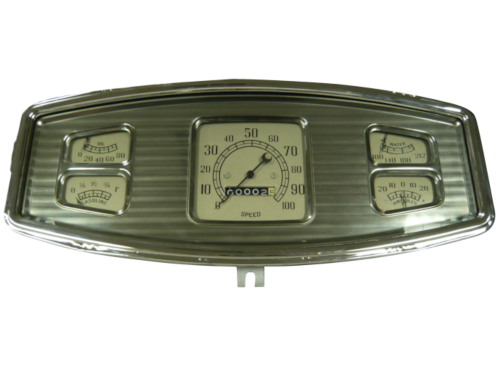
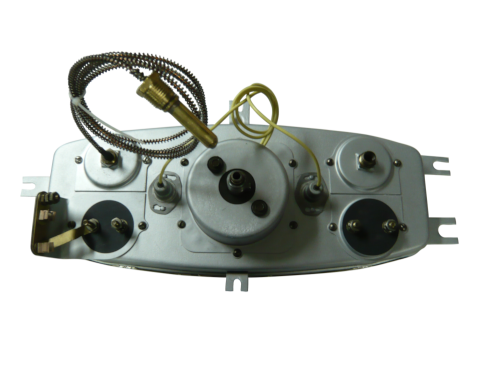
1935 - 1936 Ford conversion
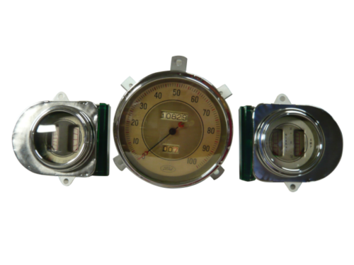
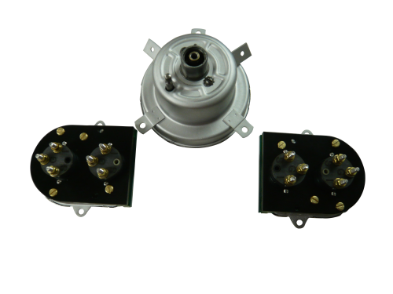
1937 Lincoln Zephyr Upgrade and restore gauges, upgrade Clock to quartz
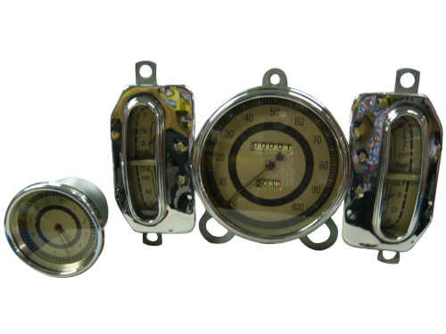
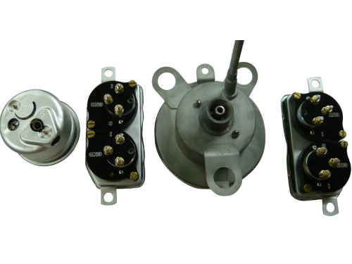
1938 Buick Gauge upgrade and Clock upgrade to Quartz
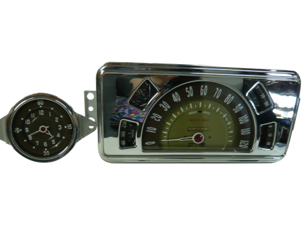
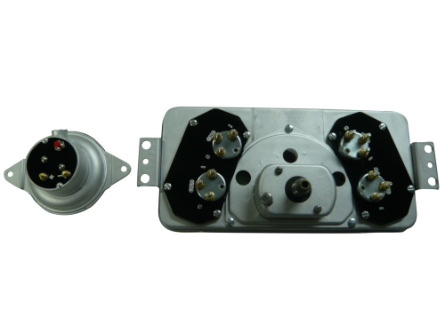
1941 Studebaker upgrade gauge and restore
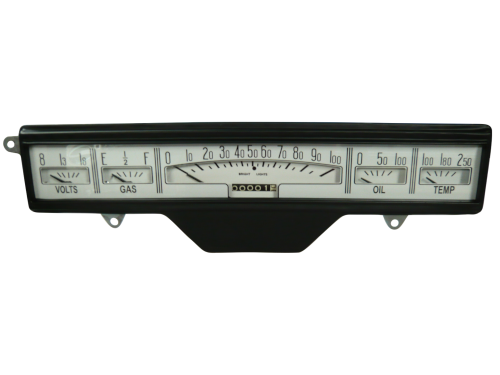
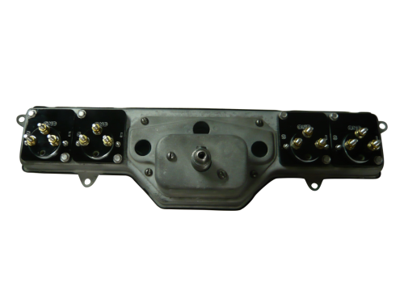
1947 - 1955 Chevrolet truck
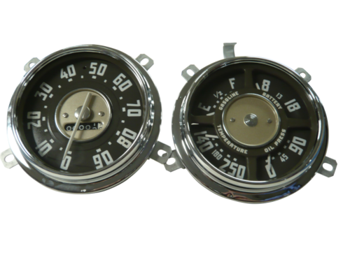
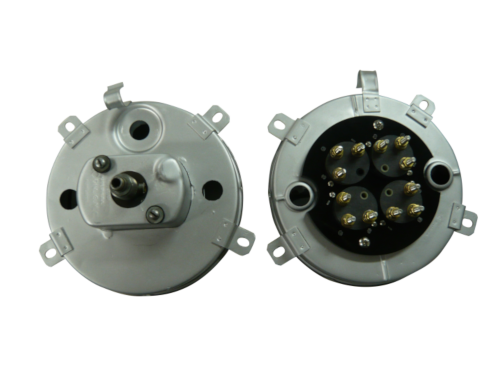
1948 Chevrolet Car gauge upgrade, Clock updated to Quartz and Radio upgrade
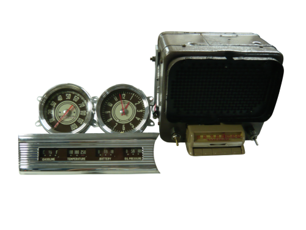
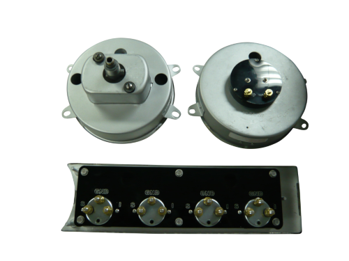
1950 Willy's custom upgrade
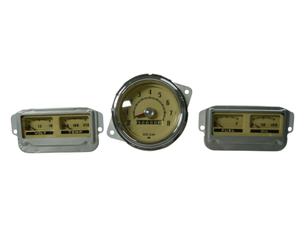
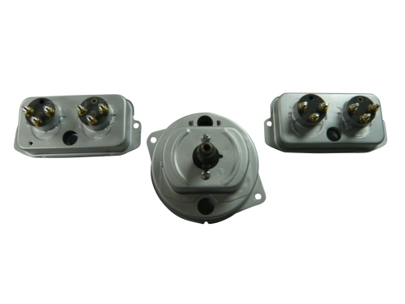